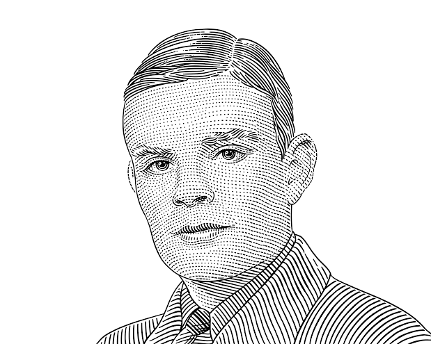

Alan Turing
Alan Turing était un mathématicien, logicien et cryptologue britannique du XXe siècle. Né en 1912, Turing est surtout connu pour son rôle déterminant dans le décryptage des codes allemands pendant la Seconde Guerre mondiale, ce qui a contribué à la victoire des Alliés. Il est également considéré comme le père de l'informatique moderne en raison de son concept de la machine de Turing, un modèle théorique qui a jeté les bases de la science informatique. Tragiquement, Turing a été persécuté pour son homosexualité à une époque où cela était criminalisé au Royaume-Uni. Il est décédé en 1954, laissant un héritage important dans les domaines de l'informatique, des mathématiques et de la cryptographie.
